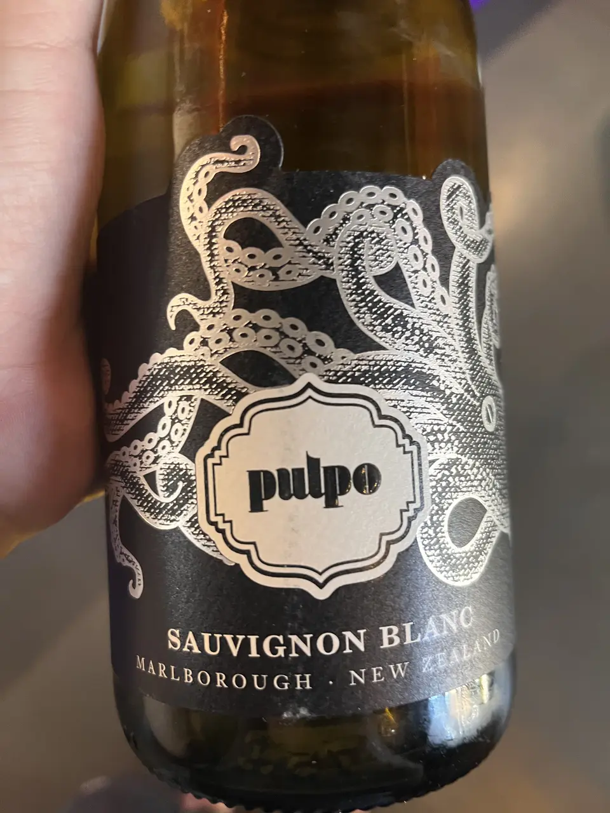

- Type
- White Still, Dry
- Producer
- Félix Solís
- Vintage
- NV
- Location
- New Zealand, Marlborough
- Grapes
- Sauvignon Blanc
- Alcohol
- 12.5
- Sugar
- NA
- Price
- 367 UAH
- Cellar
- N/A
Ratings
2022-07-02 - 5.25
Part of diverse Félix Solís brand. This SB is straightforward yet faceless. Typical notes of gooseberry, tropical fruits with notes of citrus. Hey baby, this tropical bomb lacks acidity! Who would guess? Iggy Pop playing on the background doesn’t approve my wine choice.